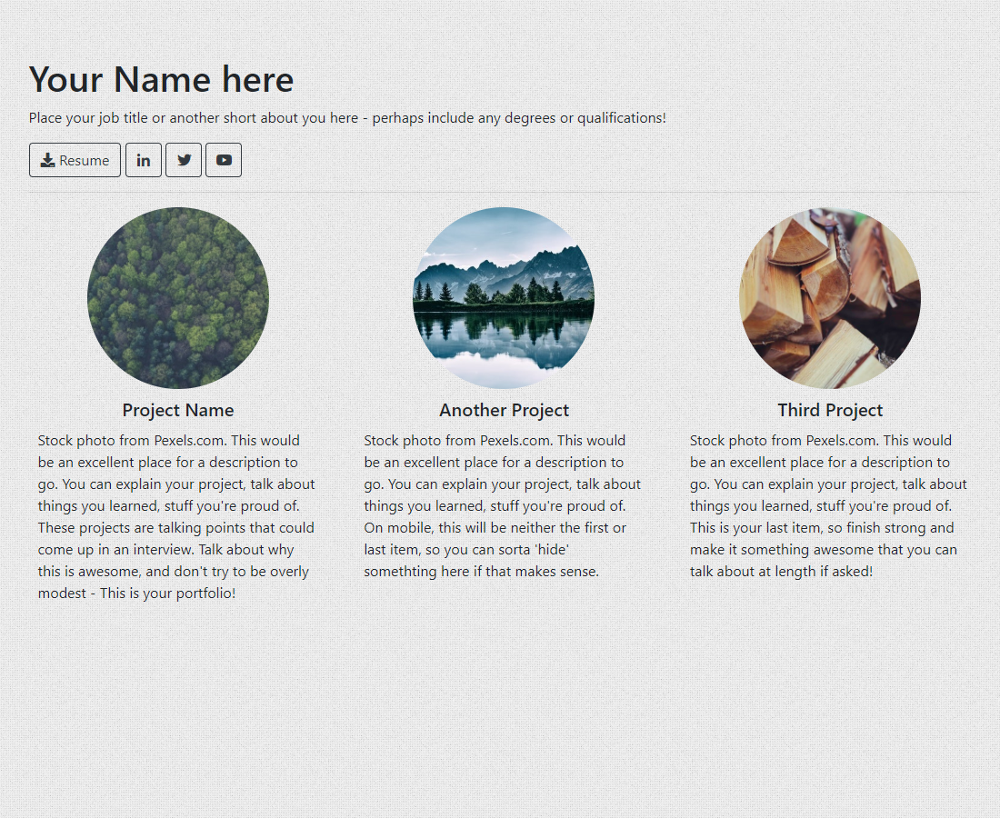

Some template websites I've put together that are free to use, modify, and publish elsewhere.
The Portfolio
A simple, single-page site designed to showcase projects as single cards. You can add more rows of projects as necessary, each row featuring up to 3 items.
The Product

A colorful single-page site designed to highlight a specific tool or product. While it's designed for 2 columns only, more can be added to highlight specific features or add other page links.

Guides
-
{% for post in site.posts %}
-
{{ post.title }}
{{ post.date | date_to_string }}
{{ post.excerpt }}
{% endfor %}
Utilities
-

Preview MD
Web | A markdown preview tool
Released v1.0This website uses a good bit of markdown for things like the blog posts, and having a tool to help preview how that looks is useful - you can get a feel for how your markdown looks when parsed and displayed as if it were a post on this site too!